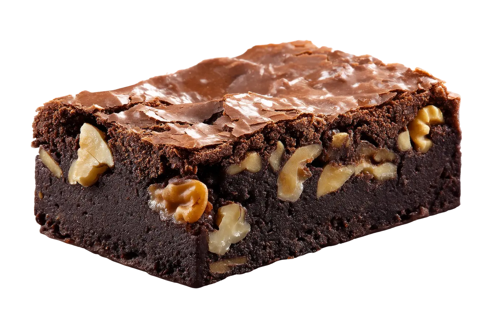

Brownies con Nuez
Tiempo: 40 minutos · Dificultad: Fácil · Porciones: 9 porciones

Preparación
- Precalienta el horno a 180°C (350°F) y enharina un molde cuadrado previamente forrado con papel encerado.
- Derrite el chocolate oscuro junto con la mantequilla a baño María o en el microondas en intervalos de 30 segundos, mezclando hasta obtener una crema suave.
- En un tazón grande, bate el azúcar con los huevos y el extracto de vainilla durante 2 a 3 minutos hasta que la mezcla aclare y se vuelva ligeramente espumosa.
- Vierte el chocolate derretido sobre la mezcla de huevos y revuelve suavemente hasta integrar.
- Tamiza la harina, el cacao en polvo y la sal directamente sobre el tazón. Integra con una espátula mediante movimientos envolventes sin batir en exceso.
- Incorpora 3/4 de las nueces picadas a la masa y mezcla bien.
- Vierte la mezcla en el molde preparado, alisa la superficie con la espátula y espolvorea el resto de las nueces picadas por encima.
- Hornea durante 22 a 25 minutos. Al insertar un palillo en el centro, debe salir con migas húmedas (no líquido, pero tampoco totalmente seco).
- Deja enfriar por completo a temperatura ambiente antes de cortar en cuadros para que adquieran su textura fudgy perfecta.
¡Un postre irresistiblemente chocolatoso, meloso por dentro y crujiente por fuera!
Tips de nuestra comunidad
Descubre recetas, combinaciones y secretos compartidos por otros amantes de la cocina. ¿Tienes un secreto de cocina?
Compártelo con la comunidad.
Tuesta ligeramente las nueces en la sartén durante 3 minutos antes de echarlas a la mezcla; intensifica muchísimo su sabor crujiente.
Para lograr esa capa craquelada brillante característica en la superficie, asegúrate de batir muy bien los huevos con el azúcar hasta que se disuelvan casi por completo.